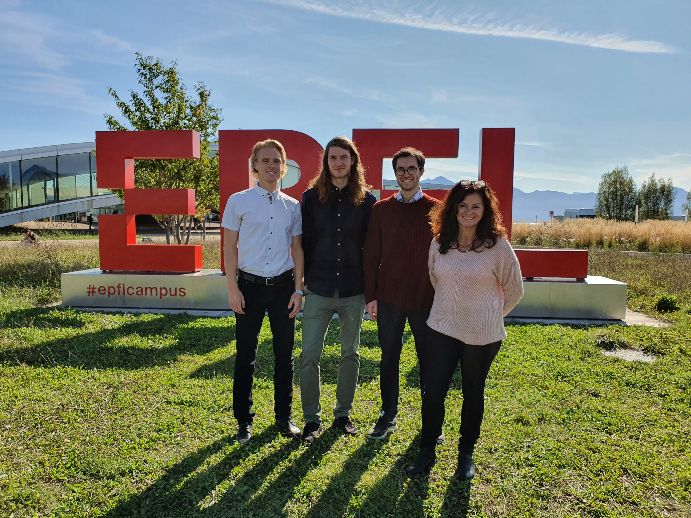

Welcome to my website. Here is my research group at EPFL (October 2020): 
From left: myself, Pål C. Ryalen, Matias Janvin and Carole Weissenberger.
I am a tenure-track assistant professor of statistics at the Department of Mathematics, EPFL. My research focuses on methods for causal inference. I am particularly interested in settings with exposures and outcomes that depend on time, that is, longitudinal data. Many of my works are inspired by applications in (bio)medicine.
Before I came to EPFL, I was privileged to work with Miguel Hernán and other excellent researchers at Harvard School of Public Health as a Kolokotrones research fellow and Fulbright Research Scholar. I also had the pleasure of being a part-time postdoctoral researcher under supervision of Kjetil Røysland and Odd Aalen at the University of Oslo. Before I became a full time academic, I had a short career as resident doctor in internal medicine.
I received my MD, Dr.Philos in Neuroscience and BSc in Mathematics from the University of Oslo. I also hold a Msc in Statistics from the University of Oxford.
My CV is available here.
Don’t hesitate to contact me by email.